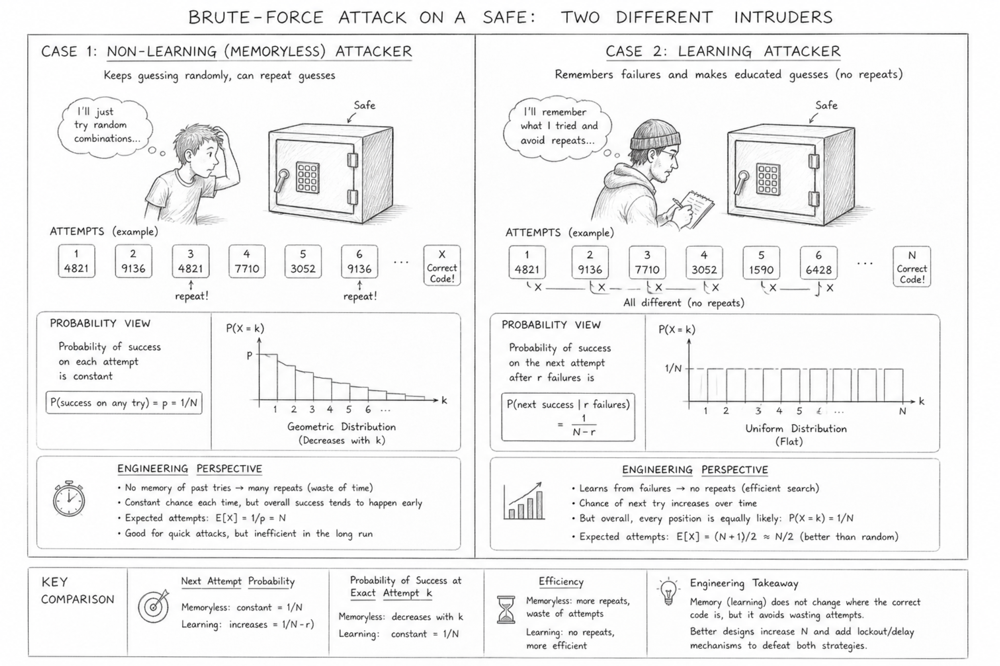

This sketch compares two statistical models for brute-force attempts on an FSM lock:
random repeated attempts and systematic non-repeated attempts.

A picture worth 1000 words:
the same lock can lead to different probability models depending on whether the search process has memory.
Case 1: Memoryless search
Guesses may repeat. The probability of success on each attempt remains constant, so the waiting time follows a geometric distribution.
Case 2: Learning search
Failed guesses are removed. The probability of success on the next attempt increases, but the first-success position is uniform from 1 to N.
Engineering perspective
A good design considers the full distribution, expected number of attempts, repeated-waste efficiency, and protections such as delays or lockouts.
Key idea: learning changes the probability of the next attempt, but engineering analysis also asks about the overall distribution of the first success.